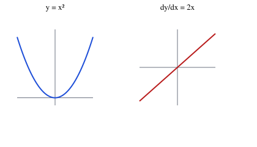
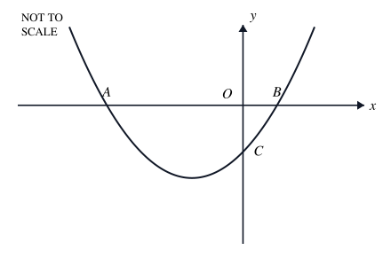
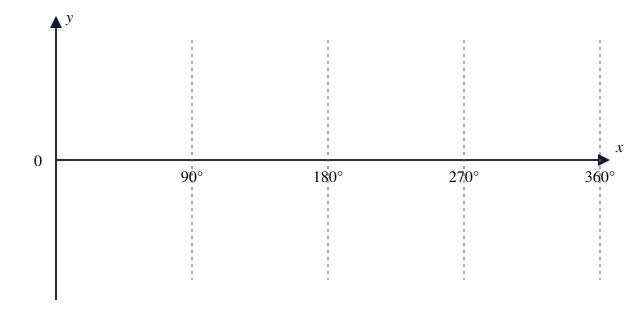

<script src="/assets/redirect.js"></script>
<section class="theory" data-section="IGCSE-18.7">
<h2>18.7 Derivatives of functions</h2>
<p class="src">Based on Cambridge IGCSE Mathematics Core and Extended Coursebook, 3rd edition (Karen Morrison and Nick Hamshaw), Chapter 18 Curved graphs, printed pp.624–640. The wording below is original. It follows the Extended calculus used in official 0580 Paper 4 questions: the derived function, the gradient at a point, the equation of a tangent, and stationary points.</p>
<p class="key-words"><strong>Key words:</strong> <em>derived function</em>, <em>derivative</em>, <em>stationary point</em>, <em>turning point</em></p>
<h3>The derived function</h3>
<p>In 18.6 the gradient at a point was estimated by drawing a tangent. For a function given by a formula, the same gradient can be found exactly by <strong>differentiation</strong>. The <strong>derived function</strong>, written \(\dfrac{\mathrm{d}y}{\mathrm{d}x}\), is the gradient function of \(y\).</p>
<p>For a power of \(x\),</p>
<p>\[\frac{\mathrm{d}}{\mathrm{d}x}\bigl(x^n\bigr)=n x^{n-1},\]</p>
<p>where \(n\) is a constant (including a negative integer). Constants differentiate to \(0\), and a constant multiple comes out in front: \(\dfrac{\mathrm{d}}{\mathrm{d}x}(ax^n)=anx^{n-1}\). A sum is differentiated term by term.</p>
<figure><figcaption>The curve \(y=x^2\) and its derived function \(\dfrac{\mathrm{d}y}{\mathrm{d}x}=2x\).</figcaption></figure>
<div class="worked-example">
<h4>Worked example 1: A derived function</h4>
<p class="src">Standard Extended differentiation (18.7). New expression, y equals 3x to the 4 minus 5x plus 2.</p>
<p>Find \(\dfrac{\mathrm{d}y}{\mathrm{d}x}\) if \(y=3x^4-5x+2\).</p>
<ol class="steps">
<li>\(\dfrac{\mathrm{d}y}{\mathrm{d}x}=12x^3-5\) <span class="mark">B2</span></li>
</ol>
<p class="final"><strong>Answer:</strong> \(12x^3-5\)</p>
</div>
<h3>The gradient at a given point</h3>
<p>To find the gradient of the curve at \(x=a\), first find \(\dfrac{\mathrm{d}y}{\mathrm{d}x}\), then substitute \(x=a\).</p>
<div class="worked-example">
<h4>Worked example 2: Gradient at a point</h4>
<p class="src">Standard method (18.7). New numbers, y equals x cubed minus 4x, at x equals 2.</p>
<p>Find the gradient of the curve \(y=x^3-4x\) at \(x=2\).</p>
<ol class="steps">
<li>\(\dfrac{\mathrm{d}y}{\mathrm{d}x}=3x^2-4\) <span class="mark">M1</span></li>
<li>At \(x=2\), the gradient is \(3\times 4-4=8\) <span class="mark">A1</span></li>
</ol>
<p class="final"><strong>Answer:</strong> \(8\)</p>
</div>
<h3>The equation of a tangent</h3>
<p>At a point \((x_1,y_1)\) on the curve, the tangent has gradient \(m=\dfrac{\mathrm{d}y}{\mathrm{d}x}\) evaluated at \(x_1\). Its equation is \(y-y_1=m(x-x_1)\), which can be written in the form \(y=mx+c\).</p>
<div class="worked-example">
<h4>Worked example 3: Equation of a tangent</h4>
<p class="src">Standard method (18.7). New numbers, y equals x squared minus x, at x equals 3.</p>
<p>Find the equation of the tangent to \(y=x^2-x\) at the point where \(x=3\).</p>
<ol class="steps">
<li>\(\dfrac{\mathrm{d}y}{\mathrm{d}x}=2x-1\). At \(x=3\), \(m=5\). The point is \((3,6)\) <span class="mark">M1</span></li>
<li>\(y-6=5(x-3)\), so \(y=5x-9\) <span class="mark">A1</span></li>
</ol>
<p class="final"><strong>Answer:</strong> \(y=5x-9\)</p>
</div>
<h3>Stationary points</h3>
<p>A <strong>stationary point</strong> (also called a <strong>turning point</strong> when the curve changes from increasing to decreasing, or the other way) is a point on the curve where \(\dfrac{\mathrm{d}y}{\mathrm{d}x}=0\). To find the coordinates:</p>
<ol>
<li>Solve \(\dfrac{\mathrm{d}y}{\mathrm{d}x}=0\) to find the \(x\)-coordinates.</li>
<li>Substitute each of those \(x\)-values into \(y\) to find the corresponding \(y\)-coordinates.</li>
</ol>
<p>To decide whether a stationary point is a maximum or a minimum you can:</p>
<ul>
<li>look at the sign of \(\dfrac{\mathrm{d}y}{\mathrm{d}x}\) just to the left and just to the right (a change from \(+\) to \(-\) is a maximum; from \(-\) to \(+\) is a minimum), or</li>
<li>find the second derivative \(\dfrac{\mathrm{d}^2 y}{\mathrm{d}x^2}\): if it is negative at the point, the point is a maximum; if it is positive, the point is a minimum.</li>
</ul>
<div class="worked-example">
<h4>Worked example 4: Stationary points</h4>
<p class="src">Standard method (18.7). New curve, y equals x cubed minus 3x plus 1.</p>
<p>Find the coordinates of the stationary points of \(y=x^3-3x+1\), and determine the nature of each.</p>
<ol class="steps">
<li>\(\dfrac{\mathrm{d}y}{\mathrm{d}x}=3x^2-3=3(x^2-1)\). Set this equal to \(0\): \(x=-1\) or \(x=1\) <span class="mark">M1</span></li>
<li>When \(x=-1\), \(y=-1+3+1=3\). When \(x=1\), \(y=1-3+1=-1\) <span class="mark">A1</span></li>
<li>\(\dfrac{\mathrm{d}^2 y}{\mathrm{d}x^2}=6x\). At \(x=-1\) this is \(-6&lt;0\), so \((-1,3)\) is a maximum. At \(x=1\) this is \(6&gt;0\), so \((1,-1)\) is a minimum <span class="mark">A1</span></li>
</ol>
<p class="final"><strong>Answer:</strong> maximum \((-1,3)\), minimum \((1,-1)\)</p>
</div>
<h3>Common mistakes</h3>
<ul>
<li>Differentiating a constant term as if it were a power of \(x\), or forgetting that \(\dfrac{\mathrm{d}}{\mathrm{d}x}(x)=1\).</li>
<li>Writing the derived function and then forgetting to substitute the given \(x\)-value.</li>
<li>Solving \(\dfrac{\mathrm{d}y}{\mathrm{d}x}=0\) but not substituting back into \(y\) to find the coordinates.</li>
<li>Using a first derivative that is not zero when claiming a stationary point.</li>
</ul>
<h3>Past paper</h3>
<p class="src">0580/42/M/J/20 Q10, official QP and official MS.</p>
<p>(a) \(y=x^4-4x^3\)</p>
<p>(i) Find the value of \(y\) when \(x=-1\). [2]</p>
<p>(ii) Find the two stationary points on the graph of \(y=x^4-4x^3\). [6]</p>
<p>(b) \(y=x^p+2x^q\). \(\dfrac{\mathrm{d}y}{\mathrm{d}x}=11x^{10}+10x^4\), where \(\dfrac{\mathrm{d}y}{\mathrm{d}x}\) is the derived function. Find the value of \(p\) and the value of \(q\). [2]</p>
<details><summary>Mark scheme</summary>
<ol class="steps">
<li>(a)(i) \(5\). 2 marks, with M1 for \((-1)^4-4(-1)^3\). <span class="mark">M1</span></li>
<li>(a)(ii) \((0,0)\) and \((3,-27)\). 6 marks: B2 for \(4x^3-12x^2[=0]\), or B1 for \(4x^3\) or \(12x^2\); M1 for setting the derivative (or their derivative) equal to \(0\); M1 for \(4x^2(x-3)[=0]\); B1 for \(x=0\) and \(x=3\), or for \(y=0\) and \(y=-27\), or for one correct coordinate pair. The two coordinate pairs complete the 6 marks. <span class="mark">B6</span></li>
<li>(b) \(p=11\), \(q=5\). B1 for each, or M1 for \(\dfrac{\mathrm{d}y}{\mathrm{d}x}=px^{p-1}+2qx^{q-1}\). <span class="mark">B2</span></li>
</ol>
</details>
<h3>Past paper</h3>
<p class="src">0580/41/O/N/20 Q10, official QP and official MS.</p>
<p>(a) The diagram shows a sketch of the curve \(y=x^2+3x-4\).</p>
<figure><figcaption>Sketch of \(y=x^2+3x-4\), labelled \(A\), \(B\), \(C\) and \(O\), and marked NOT TO SCALE.</figcaption></figure>
<p>(i) Find the coordinates of the points \(A\), \(B\) and \(C\). [4]</p>
<p>(ii) Differentiate \(x^2+3x-4\). [2]</p>
<p>(iii) Find the equation of the tangent to the curve at the point \((2,6)\). [3]</p>
<p>(b) (i) On the diagram, sketch the graph of \(y=\tan x\) for \(0^\circ\leqslant x\leqslant 360^\circ\). [2]</p>
<figure></figure>
<p>(ii) Solve the equation \(5\tan x=-7\) for \(0^\circ\leqslant x\leqslant 360^\circ\). [3]</p>
<details><summary>Mark scheme</summary>
<ol class="steps">
<li>(a)(i) \(A(-4,0)\), \(B(1,0)\), \(C(0,-4)\). 4 marks, with B3 for \(A\) and \(B\) correct; or B2 for the \(x\)-intercepts swapped; or B1 for \((x+4)(x-1)\) or for the quadratic formula, and B1 for \(A\) or \(B\) correct; and B1 for \(C(0,-4)\). Or SC2 for \(-4\), \(1\) and \(-4\) in the correct positions on the graph. <span class="mark">B4</span></li>
<li>(a)(ii) \(2x+3\). 2 marks, with B1 for an answer of the form \(2x+c\) or \(ax+3\) with \(a\neq 0\), or for the correct answer seen. <span class="mark">B2</span></li>
<li>(a)(iii) \(y=7x-8\), or equivalent. 3 marks, with B2 for the answer \(7x-8\); or M1 for the gradient \(2(2)+3\), following through their (a)(ii) of the form \(ax+b\), and M1 dep for substituting \((2,6)\) into \(y=\) their \(mx+c\). <span class="mark">B3</span></li>
<li>(b)(i) A correct sketch. 2 marks, with B1 for one correct section out of four, or B1 for two of: crosses the \(x\)-axis at \((0,0)\), \((180,0)\) and \((360,0)\) only; correct curvature in each \(90^\circ\) section; asymptotes at \(x=90\) and \(x=270\). <span class="mark">B2</span></li>
<li>(b)(ii) \(125.5\) or \(125.53\) to \(125.54\), and \(305.5\) or \(305.53\) to \(305.54\). 3 marks, with B2 for one correct angle, or B1 for \(-54.5\) or \(-54.46\ldots\), or for two angles differing by \(180\). <span class="mark">B3</span></li>
</ol>
</details>
<h3>Past paper</h3>
<p class="src">0580/41/M/J/21 Q7, official QP and official MS.</p>
<p>(a) Simplify.</p>
<p>\[\dfrac{x^2-25}{x^2-x-20}\]</p>
<p>[3]</p>
<p>(b) Write as a single fraction in its simplest form.</p>
<p>\[\dfrac{x+5}{x}+\dfrac{x+8}{x-1}\]</p>
<p>[3]</p>
<p>(c) A curve has equation \(y=2x^3-4x^2+6\).</p>
<p>(i) Find \(\dfrac{\mathrm{d}y}{\mathrm{d}x}\), the derived function of \(y\). [2]</p>
<p>(ii) Calculate the gradient of the curve \(y=2x^3-4x^2+6\) at \(x=4\). [2]</p>
<p>(iii) Find the coordinates of the two stationary points on the curve. [4]</p>
<details><summary>Mark scheme</summary>
<ol class="steps">
<li>(a) \(\dfrac{x+5}{x+4}\), final answer. 3 marks, with B1 for \((x-5)(x+5)\) and B1 for \((x-5)(x+4)\). <span class="mark">B3</span></li>
<li>(b) \(\dfrac{2x^2+12x-5}{x(x-1)}\) or \(\dfrac{2x^2+12x-5}{x^2-x}\), final answer. 3 marks, with B1 for the common denominator \(x(x-1)\), or equivalent, and B1 for \((x-1)(x+5)+x(x+8)\), or better. <span class="mark">B3</span></li>
<li>(c)(i) \(6x^2-8x\), final answer. 2 marks, with B1 for each term, or M1 for the correct answer seen and spoilt. <span class="mark">B2</span></li>
<li>(c)(ii) \(64\). 2 marks, FT their (c)(i) correctly evaluated provided at least two terms but not the original equation; M1 for substituting \(x=4\) into their (c)(i). <span class="mark">B2</span></li>
<li>(c)(iii) \((0,6)\) and \(\left(\dfrac{4}{3},\dfrac{98}{27}\right)\), or equivalent. 4 marks, with M1 for their derivative \(=0\) or \(\dfrac{\mathrm{d}y}{\mathrm{d}x}=0\) (soi); B1 for \(x=0\) and \(x=\dfrac{4}{3}\); M1 dep for substituting one of their \(x\)-values into \(y=2x^3-4x^2+6\) (soi). The two coordinate pairs complete the 4 marks. <span class="mark">B4</span></li>
</ol>
</details>
<h3>Quick checks</h3>
<div class="quick-check">
<h4>Quick check 1</h4>
<p>Find the value of \(\dfrac{\mathrm{d}y}{\mathrm{d}x}\) for \(y=x^3-6x\) at \(x=1\).</p>
<details><summary>Worked solution</summary>
<ol class="steps">
<li>\(\dfrac{\mathrm{d}y}{\mathrm{d}x}=3x^2-6\)</li>
<li>At \(x=1\) this is \(3-6=-3\)</li>
</ol>
<p class="final"><strong>Answer:</strong> \(-3\)</p>
</details>
</div>
<div class="quick-check">
<h4>Quick check 2</h4>
<p>Find the gradient of the curve \(y=x^3-6x\) at \(x=2\).</p>
<details><summary>Worked solution</summary>
<ol class="steps">
<li>\(\dfrac{\mathrm{d}y}{\mathrm{d}x}=3x^2-6\)</li>
<li>At \(x=2\) this is \(12-6=6\)</li>
</ol>
<p class="final"><strong>Answer:</strong> \(6\)</p>
</details>
</div>
<div class="quick-check">
<h4>Quick check 3</h4>
<p>The curve \(y=x^2-4x+1\) has a stationary point. What is the \(x\)-coordinate of that point?</p>
<details><summary>Worked solution</summary>
<ol class="steps">
<li>\(\dfrac{\mathrm{d}y}{\mathrm{d}x}=2x-4=0\), so \(x=2\)</li>
</ol>
<p class="final"><strong>Answer:</strong> \(2\)</p>
</details>
</div>
</section>
